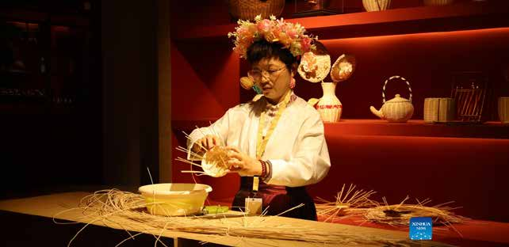

عائلات وأطفال ٢٣–٢٩يوليواليوم في السعودية
14 فعالية تبدأ اليوم أو تجري الآن


غدًا
4 فعالية تبدأ غدًا

هذا الأسبوع
42 فعالية أخرى خلال الأيام السبعة القادمة


برامج ممتدة نوافذها مفتوحة الآن
برامج وتدريب طويل المدى يمكنك الالتحاق به ضمن نافذته — ليست فعاليات لحظية.
كل فعالية هنا مرتبطة بمصدر رسمي مُتحقَّق منه
1386 فعالية من 57 مصدرًا مسجلًا · آخر مزامنة: ٢٧/٠٧/٢٠٢٦، ٩:٣٣ م بتوقيت الرياض